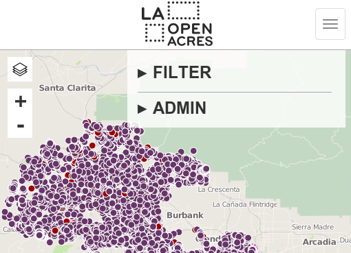
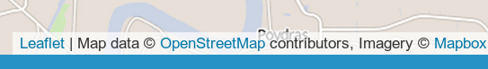

have your CartoDB data and Leaflet, too
http://eric.cartodb.com/api/v2/sql?q=
SELECT * FROM sign_application_filings&format=GeoJSON
http://eric.cartodb.com/api/v2/sql?q=
SELECT * FROM sign_application_filings&format=GeoJSON
http://eric.cartodb.com/api/v2/sql?q=
SELECT * FROM sign_application_filings&format=GeoJSON
gets data from CartoDB in GeoJSON
for example
$.getJSON('queens.geojson', function (data) {
L.geoJson(data, {
onEachFeature: function (feature, layer) {
layer.bindPopup('area: ' + feature.properties.area);
}
}).addTo(map);
});
$.getJSON('http://eric.cartodb.com/api/v2/sql?q=
SELECT * FROM sign_application_filings&format=GeoJSON',
function (data) {
L.geoJson(data, {
onEachFeature: function (feature, layer) {
layer.bindPopup('area: ' + feature.properties.area);
}
}).addTo(map);
});
if you don't have too much data (1000+ features) and want to use Leaflet directly, use this approach
also not a bad way to get around not being able to load data from your computer
responsive sites

data attribution
give credit where it's deserved

there should be no doubt where your data is coming from
...or what you have done to it
a data project is a science experiment others might try to repeat
consider having a page devoted to your data sources and methodology
include information on each feature, where useful